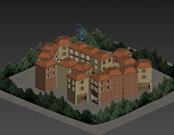
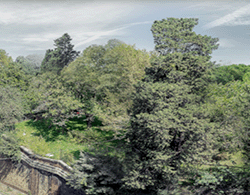
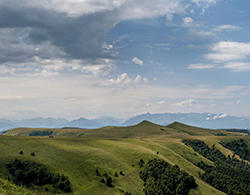
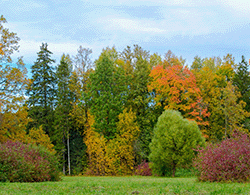
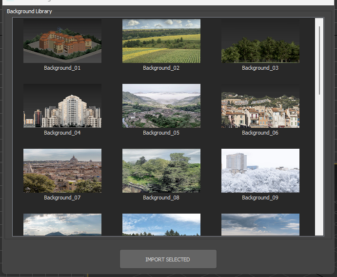
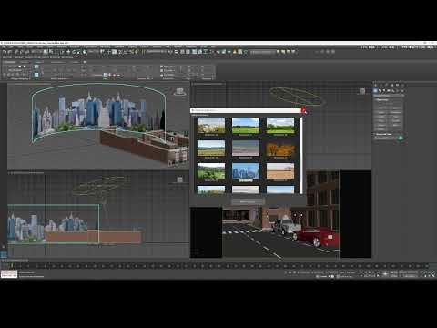

<title>Backrounder</title>
<link rel="preconnect" href="https://fonts.googleapis.com">
<link rel="preconnect" href="https://fonts.gstatic.com" crossorigin>
<link rel="stylesheet" href="https://fonts.googleapis.com/css2?family=Manrope:wght@700;800&family=IBM+Plex+Sans:wght@400;500;600&family=IBM+Plex+Mono:wght@400;500&display=swap">
<style>
  :root {
    --bg: #eeece7;
    --surface: #e2ded6;
    --border: #cac4b8;
    --border-soft: #d6d1c5;
    --text: #221d15;
    --text-muted: #6b6355;
    --accent: #9c6f0e;
    --accent-2: #3d5a52;
    --accent-soft: rgba(156,111,14,0.10);
    --accent-2-soft: rgba(61,90,82,0.10);
    --mono-bg: #e6e1d5;
    --sem-done: #2f6b46;
    --sem-pending: #6d6a4d;
    --sem-limit: #9c5a17;
  }
  @media (prefers-color-scheme: dark) {
    :root:not([data-theme="light"]) {
      --bg: #17140f;
      --surface: #201c15;
      --border: #332d22;
      --border-soft: #2b261c;
      --text: #ede8de;
      --text-muted: #a89e8c;
      --accent: #d9a744;
      --accent-2: #7aa08f;
      --accent-soft: rgba(217,167,68,0.14);
      --accent-2-soft: rgba(122,160,143,0.12);
      --mono-bg: #251f16;
      --sem-done: #5fb37e;
      --sem-pending: #a3a087;
      --sem-limit: #d99a4d;
    }
  }
  :root[data-theme="dark"] {
    --bg: #17140f;
    --surface: #201c15;
    --border: #332d22;
    --border-soft: #2b261c;
    --text: #ede8de;
    --text-muted: #a89e8c;
    --accent: #d9a744;
    --accent-2: #7aa08f;
    --accent-soft: rgba(217,167,68,0.14);
    --accent-2-soft: rgba(122,160,143,0.12);
    --mono-bg: #251f16;
    --sem-done: #5fb37e;
    --sem-pending: #a3a087;
    --sem-limit: #d99a4d;
  }

  * { box-sizing: border-box; }
  html { scroll-behavior: smooth; }
  body {
    margin: 0;
    background: var(--bg);
    color: var(--text);
    font-family: 'IBM Plex Sans', -apple-system, 'Segoe UI', sans-serif;
    font-size: 16px;
    line-height: 1.55;
    -webkit-font-smoothing: antialiased;
  }
  @media (prefers-reduced-motion: reduce) {
    html { scroll-behavior: auto; }
    * { animation: none !important; transition: none !important; }
  }

  h1, h2, h3 {
    font-family: 'Manrope', 'Arial', sans-serif;
    font-weight: 800;
    text-wrap: balance;
    margin: 0;
    letter-spacing: -0.01em;
  }
  code, .mono { font-family: 'IBM Plex Mono', 'SFMono-Regular', Consolas, monospace; }

  a { color: var(--accent); }

  .wrap { max-width: 920px; margin: 0 auto; padding-inline: 24px; }

  header.top {
    position: sticky; top: 0; z-index: 20;
    background: var(--bg);
    border-bottom: 1px solid var(--border);
  }
  .top-row {
    display: flex; align-items: baseline; justify-content: space-between;
    gap: 16px; padding-block: 16px 12px;
    flex-wrap: wrap;
  }
  .brand { display: flex; align-items: baseline; gap: 10px; flex-wrap: wrap; }
  .brand h1 { font-size: 22px; }
  .brand .tagline { color: var(--text-muted); font-size: 13px; }
  .version-badge {
    font-family: 'IBM Plex Mono', monospace; font-size: 12px; font-weight: 500;
    color: var(--accent); border: 1px solid var(--accent); background: var(--accent-soft);
    padding: 4px 9px; border-radius: 2px; white-space: nowrap;
  }
  nav.pills {
    display: flex; gap: 6px; overflow-x: auto; padding-block: 0 12px;
    -webkit-overflow-scrolling: touch; scrollbar-width: none;
  }
  nav.pills::-webkit-scrollbar { display: none; }
  nav.pills a {
    flex: 0 0 auto;
    font-family: 'IBM Plex Mono', monospace; font-size: 11.5px; text-decoration: none;
    color: var(--text-muted); border: 1px solid var(--border); border-radius: 2px;
    padding: 5px 10px; white-space: nowrap;
  }
  nav.pills a.active { color: var(--accent); border-color: var(--accent); background: var(--accent-soft); }

  main { padding-block: 8px 40px; }

  .eyebrow {
    font-family: 'IBM Plex Mono', monospace; font-size: 12px; font-weight: 500;
    letter-spacing: 0.08em; text-transform: uppercase; color: var(--accent);
    margin-bottom: 10px; display: block;
  }
  .hero { padding-block: 28px 6px; }
  .hero p.lead { max-width: 62ch; font-size: 17px; color: var(--text); margin: 0; }
  .hero p.lead code { background: var(--mono-bg); padding: 1px 5px; border-radius: 2px; font-size: 0.92em; }
  .hero p.purpose { max-width: 62ch; font-size: 14.5px; color: var(--text-muted); margin: 12px 0 0; font-style: italic; }

  /* gallery strip */
  .gallery-strip {
    display: grid; grid-template-columns: repeat(6, 1fr); gap: 1px;
    background: var(--border); border: 1px solid var(--border); margin-top: 22px; overflow: hidden;
  }
  .gallery-strip img { display: block; width: 100%; aspect-ratio: 16/9; object-fit: cover; }
  .gallery-cap { margin-top: 8px; font-family: 'IBM Plex Mono', monospace; font-size: 11.5px; color: var(--text-muted); }

  .stat-grid {
    display: grid; grid-template-columns: repeat(auto-fit, minmax(170px, 1fr));
    gap: 1px; background: var(--border); border: 1px solid var(--border);
    margin-top: 22px; border-radius: 2px; overflow: hidden;
  }
  .stat { background: var(--surface); padding: 16px 16px 14px; }
  .stat .num { font-family: 'IBM Plex Mono', monospace; font-weight: 500; font-size: 26px; color: var(--accent); font-variant-numeric: tabular-nums; }
  .stat .label { font-size: 12.5px; color: var(--text-muted); margin-top: 4px; }

  hr.rule { border: none; border-top: 1px solid var(--border); margin: 40px 0 0; }

  section.chapter { padding-block: 46px 4px; scroll-margin-top: 96px; }
  section.chapter .chnum { font-family: 'IBM Plex Mono', monospace; color: var(--accent); font-size: 13px; font-weight: 500; }
  section.chapter h2 { font-size: 30px; margin-top: 8px; }
  section.chapter .intro { color: var(--text-muted); max-width: 66ch; margin-top: 10px; font-size: 15px; }

  .callout { border-left: 3px solid var(--accent); background: var(--surface); padding: 13px 16px; margin-top: 20px; font-size: 14px; }
  .callout b { color: var(--text); }

  .steps { margin-top: 26px; display: flex; flex-direction: column; }
  .step { display: grid; grid-template-columns: 40px 1fr; gap: 14px; padding-block: 16px; border-top: 1px solid var(--border-soft); }
  .step:first-child { border-top: 1px solid var(--border); }
  .step .n { font-family: 'IBM Plex Mono', monospace; font-size: 13px; color: var(--text-muted); padding-top: 2px; }
  .step .head { display: flex; align-items: center; gap: 10px; flex-wrap: wrap; margin-bottom: 4px; }
  .step .head h4 { font-family: 'IBM Plex Sans'; font-size: 15px; font-weight: 600; margin: 0; }
  .step p { margin: 0; color: var(--text-muted); font-size: 14px; max-width: 66ch; }
  .step code { background: var(--mono-bg); padding: 1px 5px; border-radius: 2px; font-size: 0.9em; color: var(--text); }

  .screenshot { margin-top: 24px; border: 1px solid var(--border); background: var(--surface); }
  .screenshot .shot-frame { display: flex; justify-content: center; padding: 20px; background: var(--mono-bg); }
  .screenshot .shot-frame img { max-width: 100%; height: auto; box-shadow: 0 0 0 1px var(--border); }
  .screenshot .caption { padding: 10px 16px; font-size: 12px; color: var(--text-muted); border-top: 1px solid var(--border); font-family: 'IBM Plex Mono', monospace; }

  .fmt-block {
    margin-top: 24px; background: var(--surface); border: 1px solid var(--border);
    padding: 16px 18px; font-family: 'IBM Plex Mono', monospace; font-size: 13px; overflow-x: auto;
  }
  .fmt-block .tok { color: var(--accent); }
  .fmt-block .tok2 { color: var(--accent-2); }

  .tbl-wrap { overflow-x: auto; margin-top: 22px; border: 1px solid var(--border); }
  table { width: 100%; border-collapse: collapse; font-size: 13.5px; min-width: 480px; }
  thead th {
    text-align: left; font-family: 'IBM Plex Mono', monospace; font-weight: 500; font-size: 11px;
    letter-spacing: 0.05em; text-transform: uppercase; color: var(--text-muted);
    background: var(--surface); padding: 10px 14px; border-bottom: 1px solid var(--border);
  }
  tbody td { padding: 10px 14px; border-bottom: 1px solid var(--border-soft); vertical-align: top; }
  tbody tr:last-child td { border-bottom: none; }
  tbody td.code { font-family: 'IBM Plex Mono', monospace; font-size: 12.5px; color: var(--accent); white-space: nowrap; }
  .status-dot { display: inline-block; width: 8px; height: 8px; border-radius: 50%; margin-right: 8px; position: relative; top: -1px; }
  .status-dot.done { background: var(--sem-done); }
  .status-dot.pending { background: var(--sem-pending); }
  .status-dot.limit { background: var(--sem-limit); }

  .quirks { margin-top: 24px; display: flex; flex-direction: column; }
  .quirk { display: flex; gap: 12px; padding-block: 14px; border-top: 1px solid var(--border-soft); }
  .quirk:first-child { border-top: 1px solid var(--border); }
  .quirk .mark { color: var(--accent); font-family: 'IBM Plex Mono', monospace; padding-top: 2px; }
  .quirk p { margin: 0; font-size: 14.5px; color: var(--text-muted); }
  .quirk p b { color: var(--text); font-weight: 600; }

  .dist { margin-top: 22px; display: flex; flex-direction: column; gap: 14px; }
  .dist-item { display: flex; gap: 14px; }
  .dist-item .dot { width: 6px; height: 6px; border-radius: 50%; background: var(--accent); margin-top: 8px; flex: 0 0 auto; }
  .dist-item p { margin: 0; font-size: 14.5px; color: var(--text-muted); }
  .dist-item p b { color: var(--text); }
  .dist-item code { background: var(--mono-bg); padding: 1px 5px; border-radius: 2px; font-size: 0.88em; color: var(--text); }

  /* video card */
  .video-grid { display: grid; grid-template-columns: 1fr; gap: 1px; background: var(--border); border: 1px solid var(--border); margin-top: 26px; max-width: 420px; }
  .video-card { background: var(--surface); display: flex; flex-direction: column; text-decoration: none; color: inherit; }
  .video-card .thumb { position: relative; aspect-ratio: 16/9; overflow: hidden; background: var(--mono-bg); }
  .video-card .thumb img { width: 100%; height: 100%; object-fit: cover; display: block; filter: saturate(0.85); transition: filter .15s ease, transform .15s ease; }
  .video-card:hover .thumb img { filter: saturate(1); transform: scale(1.03); }
  .video-card .play { position: absolute; inset: 0; display: flex; align-items: center; justify-content: center; }
  .video-card .play span {
    width: 46px; height: 46px; border-radius: 50%; background: rgba(23,20,15,0.55);
    display: flex; align-items: center; justify-content: center; backdrop-filter: blur(1px);
  }
  .video-card .play svg { width: 16px; height: 16px; fill: #f5f2ea; margin-left: 2px; }
  .video-card .meta { padding: 14px 16px 16px; display: flex; flex-direction: column; gap: 6px; }
  .video-card .kicker { font-family: 'IBM Plex Mono', monospace; font-size: 10.5px; color: var(--accent); text-transform: uppercase; letter-spacing: 0.06em; }
  .video-card h4 { font-family: 'IBM Plex Sans'; font-size: 14.5px; font-weight: 600; margin: 0; }
  .video-card p { margin: 0; font-size: 13px; color: var(--text-muted); }
  .video-card .link { font-family: 'IBM Plex Mono', monospace; font-size: 11.5px; color: var(--accent); margin-top: 2px; }

  footer { border-top: 1px solid var(--border); margin-top: 48px; padding-block: 20px 40px; }
  footer p { margin: 0; font-size: 12.5px; color: var(--text-muted); font-family: 'IBM Plex Mono', monospace; }

  @media (max-width: 720px) {
    .gallery-strip { grid-template-columns: repeat(3, 1fr); }
    .step { grid-template-columns: 28px 1fr; }
    section.chapter h2 { font-size: 25px; }
  }
</style>

<header class="top">
  <div class="wrap top-row">
    <div class="brand">
      <h1>Backrounder</h1>
      <span class="tagline">a curated 3ds Max backdrop library with one-click import</span>
    </div>
    <span class="version-badge">v1.0</span>
  </div>
  <div class="wrap">
    <nav class="pills" id="chapter-nav">
      <a href="#ch-01" data-n="1">01 The Library</a>
      <a href="#ch-02" data-n="2">02 The Gallery</a>
      <a href="#ch-03" data-n="3">03 Import & Ownership</a>
      <a href="#ch-04" data-n="4">04 Quirks & Limits</a>
      <a href="#ch-05" data-n="5">05 Files & State</a>
      <a href="#ch-06" data-n="6">06 Video</a>
    </nav>
  </div>
</header>

<main class="wrap">

  <div class="hero">
    <span class="eyebrow">Technical description</span>
    <p class="lead">
      Backrounder is a 3ds Max plugin that turns a single library scene into a browsable gallery
      of backdrops. Pick one from a thumbnail grid, click <code>IMPORT SELECTED</code>, and it's
      merged into the current scene with its textures copied and relinked as the scene's own files
      — no shared folder left dangling behind it.
    </p>
    <p class="purpose">
      Built so a modeller can drop a finished, ready-to-render environment behind any model in
      seconds — simple to use, with the tedious part (finding and relinking the right textures)
      fully automated.
    </p>
    <div class="gallery-strip">
      
      
      
      
      
      
    </div>
    <div class="gallery-cap">6 of the 28 backdrops in the library — each a 160×90 thumbnail in the in-app gallery</div>
    <div class="stat-grid">
      <div class="stat"><div class="num">28</div><div class="label">curated backdrops in one library file</div></div>
      <div class="stat"><div class="num">1</div><div class="label">.max file doubles as both the library and its own catalog</div></div>
      <div class="stat"><div class="num">6</div><div class="label">texture suffixes handled — _D _A _N _M _R _O</div></div>
      <div class="stat"><div class="num">160×90</div><div class="label">gallery thumbnail size, matching a 16:9 backdrop</div></div>
    </div>
  </div>

  <hr class="rule">

  <!-- 01 -->
  <section class="chapter" id="ch-01">
    <span class="chnum">01</span>
    <h2>One file is the whole library</h2>
    <p class="intro">There's no separate index or metadata file listing what backdrops exist.
    The catalog and the content are the same <code>.max</code> file.</p>

    <div class="steps">
      <div class="step">
        <div class="n">→</div>
        <div>
          <div class="head"><h4>getLibraryPath()</h4></div>
          <p>Finds <code>Background_example.max</code> next to wherever the running script itself
          lives (<code>getSourceFileName()</code>), so the library always travels with the macro —
          no hardcoded path to break when it's reinstalled elsewhere.</p>
        </div>
      </div>
      <div class="step">
        <div class="n">→</div>
        <div>
          <div class="head"><h4>getAvailableBackgrounds()</h4></div>
          <p>Calls <code>getMAXFileObjectNames</code> on that library file — a MAXScript call that
          lists the named objects inside a <code>.max</code> file <i>without opening or loading it</i>.
          Filters to names matching <code>Background*</code>, sorted alphabetically.</p>
        </div>
      </div>
    </div>

    <div class="callout">
      <b>Adding a backdrop means adding an object.</b> Drop a new named <code>Background_NN</code>
      object into <code>Background_example.max</code> and it appears in the gallery next launch —
      there's nothing else to register.
    </div>
  </section>

  <hr class="rule">

  <!-- 02 -->
  <section class="chapter" id="ch-02">
    <span class="chnum">02</span>
    <h2>The gallery</h2>
    <p class="intro">A single dialog, <code>Nfinite Backgrounder v1.0</code>, built around a
    WinForms <code>ListView</code> rather than native MAXScript controls — the only way to get a
    real thumbnail grid.</p>

    <div class="steps">
      <div class="step">
        <div class="n">01</div>
        <div>
          <div class="head"><h4>Dark-themed ListView, LargeIcon mode</h4></div>
          <p>Colors set directly via <code>System.Drawing.Color.FromArgb</code> (background 40,40,40
          / text 220,220,220) so the gallery matches Max's own dark UI instead of the OS default
          white list view.</p>
        </div>
      </div>
      <div class="step">
        <div class="n">02</div>
        <div>
          <div class="head"><h4>One thumbnail per backdrop</h4></div>
          <p>Loads <code>Previews/&lt;name&gt;.png</code> (or <code>.jpg</code>) into a 160×90
          <code>ImageList</code>. If a preview is missing, it draws a flat gray placeholder tile on
          the fly instead of leaving a gap.</p>
        </div>
      </div>
      <div class="step">
        <div class="n">03</div>
        <div>
          <div class="head"><h4>IMPORT SELECTED, or just double-click</h4></div>
          <p>Both paths call the same import function — the double-click handler simply triggers the
          button's own <code>pressed()</code> event.</p>
        </div>
      </div>
    </div>

    <div class="screenshot">
      <div class="shot-frame"></div>
      <p class="caption">The gallery dialog as it looks in Max — thumbnails loaded once on open, IMPORT SELECTED below the grid</p>
    </div>
  </section>

  <hr class="rule">

  <!-- 03 -->
  <section class="chapter" id="ch-03">
    <span class="chnum">03</span>
    <h2>Import &amp; texture ownership</h2>
    <p class="intro">Merging the object is the easy part. The real work is making sure the scene
    doesn't end up quietly depending on the plugin's own folder for its textures.</p>

    <div class="steps">
      <div class="step">
        <div class="n">→</div>
        <div>
          <div class="head"><h4>importBackground(bgName)</h4></div>
          <p><code>mergeMAXFile libraryPath #(bgName) #select #autoRenameDups</code> — merges just
          the one named object, auto-renaming on collision, and selects it.</p>
        </div>
      </div>
      <div class="step">
        <div class="n">→</div>
        <div>
          <div class="head"><h4>processTextures(bgName, obj)</h4></div>
          <p>Requires the scene to already be saved (it needs <code>maxFilePath</code> to know where
          to put things). For each of six suffixes (<code>_D _A _N _M _R _O</code>) across four
          extensions, it looks for the matching source texture next to the script, copies it into
          <code>&lt;scene&gt;\Textures\</code>, renamed to <code>&lt;sceneName&gt;-Background&lt;suffix&gt;</code>,
          overwriting any stale copy from a previous import.</p>
        </div>
      </div>
      <div class="step">
        <div class="n">→</div>
        <div>
          <div class="head"><h4>Relinking the material</h4></div>
          <p>Scans the imported object's material with <code>getClassInstances BitmapTexture</code>
          (descending into every sub-material if it's a Multi/Sub-Object), matches each map's current
          filename against the background's name, and repoints it to the freshly copied local file.</p>
        </div>
      </div>
    </div>

    <div class="fmt-block">&lt;sceneName&gt;-Background<span class="tok">_D</span>.png · <span class="tok2">_A</span> · _N · _M · _R · _O</div>

    <div class="callout">
      <b>The scene stops needing the plugin.</b> After import, every backdrop texture is a local
      copy inside the scene's own <code>Textures\</code> folder — move the scene to another machine
      without Backrounder installed and the render still finds its maps.
    </div>
  </section>

  <hr class="rule">

  <!-- 04 -->
  <section class="chapter" id="ch-04">
    <span class="chnum">04</span>
    <h2>Quirks and limits</h2>
    <p class="intro">Three things worth knowing before assuming a backdrop "just works" in every scene.</p>

    <div class="quirks">
      <div class="quirk">
        <div class="mark">—</div>
        <p><b>Save the scene first.</b> Without a <code>maxFileName</code>, there's no project
        folder to put a <code>Textures\</code> directory in, so the relink step refuses to run and
        the backdrop keeps pointing at the plugin's own folder instead.</p>
      </div>
      <div class="quirk">
        <div class="mark">—</div>
        <p><b>Only standard <code>BitmapTexture</code> maps are relinked.</b> The scan doesn't know
        about <code>VRayBitmap</code>, <code>CoronaBitmap</code>, or other renderer-specific map
        types — a backdrop material built on those keeps its original texture paths untouched.</p>
      </div>
      <div class="quirk">
        <div class="mark">—</div>
        <p><b>The installer reloads the macro live.</b> Instead of asking for a restart, it calls
        <code>macros.load</code> directly after copying files. If a target file is locked (Max still
        has it open), it falls back to renaming the old copy with a timestamped <code>.old_</code>
        suffix rather than failing the install outright.</p>
      </div>
    </div>
  </section>

  <hr class="rule">

  <!-- 05 -->
  <section class="chapter" id="ch-05">
    <span class="chnum">05</span>
    <h2>Files and current state</h2>
    <p class="intro">Everything ships flat, next to the installer — the same convention as the
    rest of this toolset.</p>

    <div class="dist">
      <div class="dist-item"><div class="dot"></div><p><b>Packaged as <code>Backrounder_v1.0.zip</code></b> — drag it into the Max viewport, or run <code>Run_Background_Importer.ms</code> directly via Scripting → Run Script.</p></div>
      <div class="dist-item"><div class="dot"></div><p><b>Installs flat into <code>userMacros</code></b> — the .mcr, <code>Background_example.max</code>, and all 56 source textures sit side by side; only <code>Previews\</code> gets its own subfolder.</p></div>
      <div class="dist-item"><div class="dot"></div><p><b>Category <code>"Nfinite"</code></b> — like the rest of the toolset, not yet renamed to <code>Physicl</code> in the code itself.</p></div>
    </div>

    <div class="tbl-wrap" style="margin-top:30px">
      <table>
        <thead><tr><th>File</th><th>Role</th></tr></thead>
        <tbody>
          <tr><td class="code">Background_Importer.mcr</td><td>Main macroScript — gallery UI, merge, texture copy &amp; relink</td></tr>
          <tr><td class="code">Run_Background_Importer.ms</td><td>Installer — copies everything into userMacros, reloads the macro live</td></tr>
          <tr><td class="code">Background_example.max</td><td>The library — one named object per backdrop preset</td></tr>
          <tr><td class="code">Background_*.png</td><td>56 source textures — a _D and _A pair for each of the 28 backdrops</td></tr>
          <tr><td class="code">Previews/*.png</td><td>28 gallery thumbnails, one per backdrop</td></tr>
        </tbody>
      </table>
    </div>

    <div class="tbl-wrap" style="margin-top:24px">
      <table>
        <thead><tr><th>State</th><th>What exactly</th></tr></thead>
        <tbody>
          <tr><td><span class="status-dot done"></span>Done</td><td>Library scan via getMAXFileObjectNames, no separate index needed</td></tr>
          <tr><td><span class="status-dot done"></span>Done</td><td>Dark-themed thumbnail gallery with a fallback tile for missing previews</td></tr>
          <tr><td><span class="status-dot done"></span>Done</td><td>Single-object merge import, auto-renaming on name collisions</td></tr>
          <tr><td><span class="status-dot done"></span>Done</td><td>Texture copy, rename and relink into the scene's own Textures folder</td></tr>
          <tr><td><span class="status-dot done"></span>Done</td><td>Live macro reload on install, with a locked-file rename fallback</td></tr>
          <tr><td><span class="status-dot limit"></span>Known gap</td><td>VRayBitmap / CoronaBitmap and other renderer-specific maps aren't relinked</td></tr>
        </tbody>
      </table>
    </div>
  </section>

  <hr class="rule">

  <!-- 06 -->
  <section class="chapter" id="ch-06">
    <span class="chnum">06</span>
    <h2>Demo video</h2>
    <p class="intro">A short walkthrough from the author's own channel, covering install and the import workflow.</p>

    <div class="video-grid">
      <a class="video-card" href="https://youtu.be/vq6oIuptf0w" target="_blank" rel="noopener noreferrer">
        <div class="thumb">
          
          <div class="play"><span><svg viewBox="0 0 24 24"><path d="M6 4l15 8-15 8z"/></svg></span></div>
        </div>
        <div class="meta">
          <span class="kicker">Install &amp; usage</span>
          <h4>Background Importer Script</h4>
          <p>Installing the plugin and importing a backdrop into a scene from the gallery.</p>
          <span class="link">youtu.be/vq6oIuptf0w ↗</span>
        </div>
      </a>
    </div>
  </section>

  <hr class="rule">

  <footer>
    <p>Backrounder · internal tool · v1.0 · document as of September 21, 2026</p>
  </footer>

</main>

<script>
(function(){
  var links = Array.prototype.slice.call(document.querySelectorAll('#chapter-nav a'));
  var sections = links.map(function(a){ return document.querySelector(a.getAttribute('href')); });
  if (!('IntersectionObserver' in window)) return;
  var io = new IntersectionObserver(function(entries){
    entries.forEach(function(entry){
      var idx = sections.indexOf(entry.target);
      if (idx === -1) return;
      if (entry.isIntersecting) {
        links.forEach(function(l){ l.classList.remove('active'); });
        links[idx].classList.add('active');
      }
    });
  }, { rootMargin: '-40% 0px -55% 0px', threshold: 0 });
  sections.forEach(function(s){ if (s) io.observe(s); });
})();
</script>
